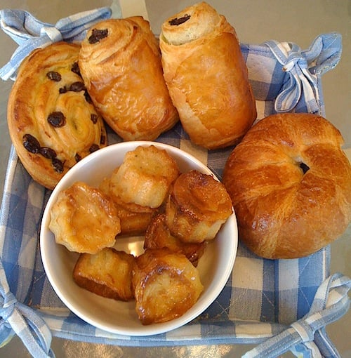
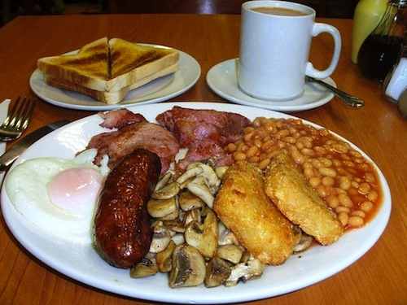
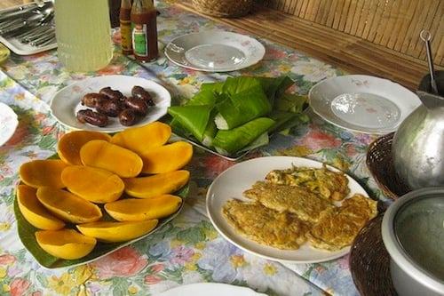

L'EUROPA DOLCE
LA FRANCESE
L'EUROPA SALATA
L'INGLESE
L'ASIA E I SUOI SAPORI
L'IRANIANA
La prima colazione tra l’enorme di variante incrocia il dolce e il salato nella cucina iraniana. Al dolce dell’halim, fatto con frumento, cannella e zucchero viene completato cone delle carni sminuzzate speziate con limone e cipolla.
LA FILIPPINA
L’ingrediente principale è il sinangang; delle piccole salsiccie fritte con sale e aglio. Il piatto viene completato con uova, carne, fagioli e l’immancabile riso. Senza dimenticare il frutto tipico dell’isola, ovvero il mango.
LA THAILANDESE
Un piatto unico che unisce pesce, carne e riso. Il pesce viene aromatizzato alla menta, la carne di maiale cotta con del peperoncino, e da buona consuetudine asiatica il riso in bianco ad unire il piatto che spesso viene consumato anche a pranzo e cena.

L'AMERICANA
Entrata nell’immaginario collettivo grazie ad Hollywood, la colazione americana è famosa per i pancake (rigorosamente fatti in casa) con lo sciroppo d’acero, burro, mirtilli, bacon croccante, uova fritte e pane tostato. Una delle colazioni più assaggiate anche oltreoceano.
LA PERUVIANA
Sotto l’equatore le abitudini culinerie cambiano drasticamente. Le ceviche è un piatto che spopola in Perù fatto da semplici frutti di mare e pesce crudo marinati con del limone, lime e peperoncino. Una delle più esotiche e sconosciute colazioni.
LA MAROCCHINA
Il baghir è un tipo di pane , fatto con farina di semola, da cui si possono ricavare anche delle crepes. Queste vengono mangiate con dei chutney di vario tipo, con delle composte, confetture, marmellate ma anche con del burro o dei formaggi.
L'EGIZIANA
Foul Madamas è il piatto tipico della colazione egiziana. Fatto con una zuppa di fave, ceci, aglio e limone, conditi con olio d’oliva, pepe di caienna e salsa tahini. A completare il piatto un uovo solo e delle verdure verdi.
L'UGANDESE
Piatto povero trasformato in un piatto tipico nazionale. La colazione in Uganda è il katogo composto dalle onnipresenti banane del luogo insieme a della carne stufata, come contorno delle verdure e delle salse sempre a base di verdura.